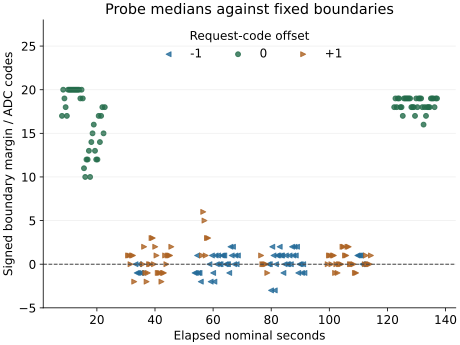

Questions and rationale
The two acquisition-spacing boots recognized 864/864 candidate medians each, with no observed benefit from adding 5 or 20 ms. Boot 2 nevertheless retained overlapping raw-reference intervals and a state-0 median exactly on its upper acceptance boundary. Recognition of a three-reading median does not establish either a fresh conversion or tolerance to further electrical movement.
The earlier transition series already observed result retention during trigger omission and numerical updates after triggering. This investigation connects that relation to the current median recognizer: can a retained result still receive a valid identity after the requested state changes? It also tests whether small control-code changes remain recognizable under acceptance intervals fixed before validation.
Trigger-provenance hypothesis: following a triggered A triple, the three omitted-trigger B readings retain the last A result; the first subsequent triggered B reading differs when A and B are distinct. Status follows the declared triggered or omitted pattern. Self-transitions supply retention controls without a numerical-change requirement.
Boundary hypothesis: the unchanged classifier recognizes the declared B state for every nominal and perturbed B median. Wrong, rejected or unavailable outcomes contradict complete recognition for their condition. Signed distance to the requested state's acceptance boundary quantifies observed margin; a zero margin remains visible.
Method
One planned boot, six rounds, 3888 readings. Each round begins with 216 reference readings: 36 consecutive triggered observations at each of the six control codes 90, 93, 96, 99, 102 and 105. Reference order rotates with the round. The existing median-reference calibration and one-third-gap rule then define the baseline and candidate intervals. All validation observations remain excluded from calibration.
Each round's 432 validation readings form 36 trials of twelve readings. Every ordered pair A/B occurs once per round, including A = B. Each stage contains a non-overlapping triple:
- Prime A. Request A and trigger three acquisitions.
- Omit at B. Request B and omit the trigger for all three diagnostic reads.
- Trigger B. Keep B requested and trigger three acquisitions.
- Probe B. Request B with the declared control-code offset and trigger three acquisitions.
There are 216 trials: 180 changed-state pairs and 36 self-transitions. Every stage supplies 216 medians. Omitted-trigger medians retain the ordinary native classifier output, making recognizable stale values observable. Those classifications are reported as controls and cannot qualify fresh B observations.
Keep zero added acquisition wait, the existing 1000 microsecond pre-ADC settling interval, control limits, operating guards, transaction deadlines and restoration. Zero added wait does not remove settling, transport, status reads or instruction overhead. All retained ADC and whole-call counters keep the existing ordering instructions.
Boundary perturbations
The probe stage uses offsets 0, +1, −1, −1, +1 and 0 control codes in rounds 0–5. At the lowest state, a negative offset is replaced by +1; at the highest state, a positive offset is replaced by −1. Thus every request stays within the previously tested 90–105 interval.
| Offset | Medians | Control interpretation |
|---|---|---|
| −1 | 72 | One code below B |
| 0 | 72 | Repeated nominal B |
| +1 | 72 | One code above B |
Each interior state has twelve probes per offset. The two outer states each have twelve nominal and twenty-four inward probes; outward behavior is not tested. A one-code change is an intervention in the request register, not an independently calibrated voltage increment.
The immediately preceding triggered B median is the paired nominal reference for each probe. Round and perturbation sign are associated, although the order is symmetric and all states and A/B pairs occur in each round. Differences can include transition history, elapsed operation and other unmeasured conditions. Report each round and state before aggregating offsets; do not infer a causal voltage-noise model from the totals.
Assessment fixed before acquisition
First require matching preparation identity, unchanged boot payload, a complete valid journal, the prescribed schedule, control readbacks, operating checks and restorations. Reconstruct both native classifiers from the recorded reference inputs. Require all available ordered ADC observations to fall monotonically within their whole-call interval.
For every completed triggered reading, require the observed status sequence 0 → 1 → 0; omitted-trigger controls require 0 → 0 → 0. Both result pairs must agree. An unexpected signature, unavailable observation or failed operation prevents the diagnostic criterion from passing. These signatures are experimentally supported observations; they are not a complete register specification.
- Trigger provenance: all 216 omitted triples retain their immediately preceding last A result; all 180 changed-state pairs update numerically at the first triggered B read. Preserve self-transition outcomes separately. Count how often the retained value is recognized as A, including wrong and unavailable assignments.
- Nominal recognition: all 216 prime-A and 216 triggered-B medians are correct. Omitted-trigger outcomes cannot contribute to this criterion.
- Boundary robustness: all 72 scheduled probe medians at each offset are correct. Compare each probe with its preceding nominal B result; report wrong, rejected and unavailable counts, state, round and signed boundary margin.
The combined criterion requires all three results and diagnostic integrity. Its individual components remain separately reported if another fails. Missing trials and early failures remain in the planned denominators. A failed calibration remains unavailable; no interval widening, label substitution or post-return fitting is permitted.
A passing retention/update result establishes only that relation in the recorded sequence. It does not independently timestamp a physical conversion, exclude other device activity or establish analog accuracy. Repeated values can result from either retention or a new conversion of a stable input. Independent conversion freshness therefore remains a separate qualification even if every declared control passes.
SEIGRASM and evidence layout
The challenge dispatch operation contains authored AArch64 opcodes. It selects the stage's request and existing ADC mode, then calls the existing timed acquisition, supervision, calibration and recognition path. During priming, the recorded requested-state field is A; subsequent stages record B. The recognizer receives measured values and frozen intervals, never the requested identity.
The existing cycle provides round and group coordinates; six twelve-reading trials occupy each 72-reading validation group. The group's position and start flag identify schedule coordinates, not a promise that its electrical request remains constant. The independent reader derives the exact stage, request, mode and offset from the ordinal and checks the recorded fields against that plan.
Configuration schema 12 retains 64-word acquisition rows, six-word ordered interval records and the existing baseline/candidate calibration and decision records. Configuration words 55–63 are 648, 12, 4, 3, 1, 0, 1, 90, 3: rows per round, readings per trial, stages per trial, readings per median, triggered mode, added wait, perturbation magnitude, first control and gap divisor. The maximum remains 32151 occupied sectors within 32704 reservations.
Target execution remains the literal SEIGRASM entry, direct GPIO/I2C control, acquisition, native recognition and senary raw-sector journal. PC tools package literal instruction words and independently assess the returned bytes. The existing EEPROM loader and initial hardware state remain apparatus dependencies. This experiment introduces no new firmware request, target language, compiler, PMIC register or filesystem operation.
Decisions informed by the return
If omitted results retain valid identities, a state identity alone is insufficient evidence that a sample belongs to the current request. Subsequent Hyphos operations need an explicit acquisition-provenance relation whose observed limits remain visible. An unexpected omission/update pattern instead requires examining the complete trigger, status and result traces before adopting that relation.
If nominal recognition recurs but perturbations cause rejection or wrong assignment, preserve the measured boundary and test a specifically justified representation or recognition change. If all offsets pass, the result supports only the tested one-code perturbations and inward outer-state coverage. It does not establish broader operating limits or justify removing the rejection regions.
Powered window
Retain the 26-minute powered session and the established SD workflow. The preceding boots reached final-section entry at about 23 minutes 44 seconds and recovered complete journals. This preparation keeps the journal size, removes the 21.6-second added-wait budget and changes the request/trigger schedule. The returned journal is complete; measured timing is reported below.
Preparation
Preparation DAF799991446 was installed for this run. The complete 64 MiB readback matches the image SHA-256; the preceding return was preserved and matched before replacement. The physical return is assessed below; the frozen protocol remains in the preparation archive.
All 263 supplied-device execution tests passed with source hashes unchanged during validation. The new dispatch was checked at every one of the 3888 ordinals. Connected tests exercise retained-result controls, wrong and rejected probe medians, invalid status/order, altered requests and recovery of a failed acquisition prefix. These tests qualify implementation behavior under supplied responses, not physical behavior.
The instruction comparison retains 33 regions byte-for-byte and replaces only the spacing dispatch with the challenge dispatch; acquisition contexts and configuration change accordingly. Exact opcodes, packaging and assessment sources, criteria and image identity are preserved before acquisition.
Results
Nominal recognition and the declared retention/update controls passed. Boundary robustness did not: 34 of 144 one-code perturbations were rejected, with no wrong identity assigned to a triggered median.
All 3888 readings were recovered. Prime-A and triggered-B medians were each 216/216 correct. The 72 zero-offset probes were also correct, giving 504/504 unperturbed medians across these three groups. The narrower renewed baseline rejected two prime-A, one triggered-B and one zero-offset median; the candidate accepted all four.
| Condition | Correct / scheduled | Rejected |
|---|---|---|
| Prime A | 216 / 216 | 0 |
| Trigger B | 216 / 216 | 0 |
| Probe −1 | 53 / 72 | 19 |
| Probe 0 | 72 / 72 | 0 |
| Probe +1 | 57 / 72 | 15 |
The combined criterion was not met because its boundary component failed. Diagnostic integrity, trigger provenance and nominal recognition each met their separately declared criterion. Omitted-trigger controls are assessed separately below.
Retention and triggered updates
In all 216 trials, the three omitted-trigger reads exactly retained the immediately preceding last A result. Every omitted triple was still recognized as A. Thus the 180 trials with A ≠ B produced an identity belonging to the preceding request, while the 36 self-transitions remained indistinguishable by identity alone.
The first subsequent triggered-B result changed numerically in all 180 changed-state trials. No numerical-change requirement was imposed on the 36 self-transitions. All 3240 triggered readings had the declared 0 → 1 → 0 status signature; all 648 omitted readings had 0 → 0 → 0. Both result pairs agreed throughout.
These observations establish the declared retention/update relation in this boot. A recognized state alone did not establish that the result belonged to the current request. The records still do not independently timestamp an analog conversion or exclude unobserved device activity.
Boundary observations
Every perturbed probe followed a correctly recognized nominal B median. One-code decreases moved the probe median by −23 to −16 ADC codes relative to that preceding median; increases moved it by +15 to +23. Zero-offset differences ranged from −4 to +8. These are observed digital-code differences, not independently calibrated voltage changes.
| State | −1 | 0 | +1 |
|---|---|---|---|
| 0 | — | 12 / 12 | 20 / 24 |
| 1 | 7 / 12 | 12 / 12 | 12 / 12 |
| 2 | 12 / 12 | 12 / 12 | 4 / 12 |
| 3 | 10 / 12 | 12 / 12 | 12 / 12 |
| 4 | 12 / 12 | 12 / 12 | 9 / 12 |
| 5 | 12 / 24 | 12 / 12 | — |
The 34 rejected probe medians lay 1–3 ADC codes outside their requested intervals: 26 were one code outside, six were two codes outside and two were three codes outside. A further 47 perturbed medians were accepted exactly on a boundary. The zero-offset probes had margins of 10–20 ADC codes; perturbed margins ranged from −3 to +6.


Rounds 0–5 produced respectively 0, 14, 9, 7, 4 and 0 probe rejections, each from 36 probes. These totals do not establish improvement with elapsed time: offsets, transition history and renewed reference bounds vary with round.
Timing and completion
All 3888 whole-call intervals and 27216 internal ADC counter observations satisfy the declared ordering checks. All 7776 endpoint frequency observations report 54000000 Hz. Whole-call duration has a median of 34.915759 ms and a range of 33.100278–39.043352 ms.
Acquisition lasted 137.075046 nominal seconds; the ordered first-start to last-end span was 137.066564 seconds. Final-section entry occurred 1402.880597 seconds after trial entry, about 23 minutes 23 seconds. The complete persisted journal was recovered. Its final target readback is not proved by that recovery.
Interpretation and next investigation
Zero added wait remains a suitable reference under the tested procedure: all nominal candidate medians were recognized in this boot. The changed transition schedule means this is not another identical spacing replicate.
The omission controls demonstrate a concrete requirement for subsequent acquisition use: retain the request/trigger/result relation alongside state identity. An identity can remain valid for A after B has been requested. These records support that provenance distinction without establishing independent physical conversion freshness.
The perturbations intentionally move the measured values. Their rejections do not by themselves show uncontrolled noise, overlapping accepted states or a need for longer waiting. The current intervals reject values near their edges while preserving nominal recognition. This run does not establish tolerance to all ±1 request-code changes.
A useful next comparison would balance −1, 0 and +1 probes within each round and state, using separate reference and validation data. Retain the current classifier and zero added wait as references, record request-to-observation response and boundary margins, and require any proposed tolerance change to preserve rejection of adjacent-state values. This would reduce the present offset/round association and test whether the boundary behavior recurs before selecting a new rule. Widening these intervals after this return would not qualify the failed criterion.
Acquisition integrity
Two read-only acquisitions agree by SHA-256: 506295012f68d61ac9c69cf3f830c6055c6d8bcccb7e98e67569d2fb7aea91c8. Preparation identity matches and both boot files are unchanged. All 32151 journal records are valid and consecutive; 553 empty reservations remain unchanged. All six block restorations completed, and final restoration and pin release report success.
Seven sectors outside the journal differ from preparation; their writer and timing remain unidentified. No deviations were reported; external powered duration was not separately measured. The frozen preparation, raw return, assessment sources and artifact hashes are preserved. The SD has not been rewritten following this return.